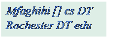
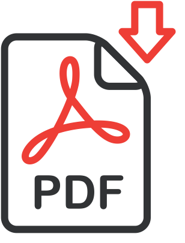

Mohammad Hossein Faghihi Sereshgi
PhD In Computer Science
Lead Encryption Engineer
University of Rochester, Mediawallah

I received my PhD from the University of Rochester in Computer Science, supervised by Dr. Muthuramakrishnan Venkitasubramaniam. My research is mainly focused on theories in Computer Science. I use concepts in Multi-Party Computation and Zero-Knowledge Proofs to design and implement protocols for computations. I am currently working on usability of Multi-Party Computation in Machine Learning. I received an MSc degree in Computer Science from University of Rochester and an MSc degree in Electrical Engineering from Isfahan University of Technology.
TAs
Introduction to cryptography Fall 2019
Introduction to cryptography Fall 2018
Computation & Formal Systems Spring 2017
Talks
THEORY CANAL: The Rochester Theory Seminar Series 2020-2021, Rochester Institute of Technology, Rochester NY, USA, February 10th 2021 --> slides 
Publications
Flag: A Framework for Lightweight Robust Secure Aggregation, Laasya Bangalore, Mohammad Hossein Faghihi Sereshgi, Carmit Hazay, Muthuramakrishnan Venkitasubramaniam, Asia CCS 2023
Is the Classical GMW Paradigm Practical? The Case of Non-Interactive Actively Secure 2PC, Jackson Abascal, Mohammad Hossein Faghihi Sereshgi, Carmit Hazay, Yuval Ishai, Muthuramakrishnan Venkitasubramaniam. Proceedings of the 2020 ACM SIGSAC Conference on Computer and Communications Security, October 2020 Pages 1591–1605
Biclique cryptanalysis of MIBS-80 and PRESENT-80 block ciphers, Mohammad Hossein Faghihi Sereshgi, Mohammad Dakhilalian, Mohsen Shakiba. Security and Communication Networks, vol. 9, no. 1, pp. 27-33, 2016.
Professional Academic Services
Crypto 2021: Reviewer